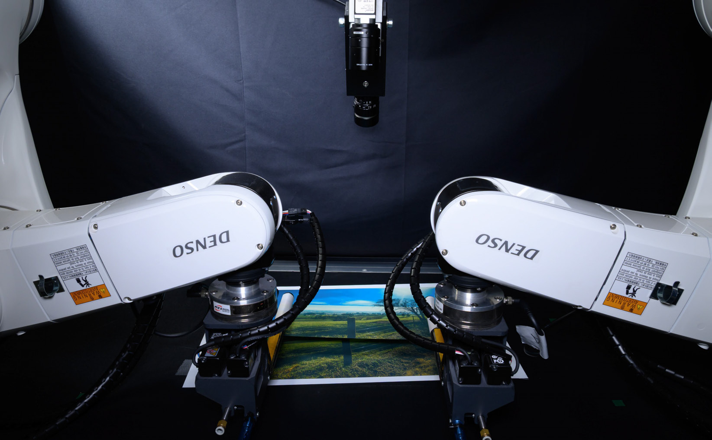

Robot vision and manipulation
I work on visual servoing (visual feedback control) and dual-arm fabric manipulation.
Fabric texture matching with a dual-arm robot (IEEE RA-L, 2026)
About my research
I work on visual servoing: using camera images to drive a robot so that an object reaches a target position. My Ph.D. was on CNN-based object positioning. From 2022 to 2025 I was at TransGP and The University of Hong Kong, where I worked on dual-arm fabric manipulation and automated sewing.
My current projects combine visual feedback with learning-based methods such as imitation learning and generative models, and use projection-based shape estimation for fabric. If you are interested in collaborating, please send me an email.
Projects
News
Kai Tang presented our paper “RTFF: Random-to-Target Fabric Flattening Policy using Dual-Arm Manipulator” at IROS 2026 in Pittsburgh.
“Robotic Fabric Alignment System for Sewing Using Global Local Weighted ICP” (coauthor) was published in IEEE T-ASE.
I presented our RA-L paper on fabric texture matching at ICRA 2026.
“Design and Development of an End-Effector for Fabric Edge Folding Along a Convex Curve With Multiple Pleats” (coauthor) appeared in IEEE/ASME T-MECH as Early Access.
Sota Ishii presented work on evaluating the basic performance of a vision-language-action (VLA) model at the SICE Tohoku Chapter meeting (program).
“Automated Action Generation Based on Action Field for Robotic Garment Smoothing and Alignment” (coauthor) was published in IEEE T-ASE.
My paper “Transformer Driven Visual Servoing for Fabric Texture Matching Using Dual-Arm Manipulator” was published in IEEE RA-L.
I joined the Unprecedented-scale Data Analytics Center, Tohoku University, as an Assistant Professor.
A full list of papers is on the Publications page.